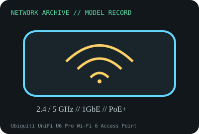

[ MODEL-SPECIFIC NETWORK HARDWARE RECORD ]
Ubiquiti UniFi U6 Pro Wi-Fi 6 Access Point
Dual-band Wi-Fi 6 indoor access point with one Gigabit Ethernet uplink and PoE+ input. Specifications are tied to this named product; confirm the physical label, revision and source documentation.

IDENTIFICATION: Verify exact PID/model, revision, label and host support. The catalog separates nominal PHY/link specifications from measured throughput; no benchmark is asserted unless explicitly recorded.
Model-specific specifications and compatibility
| Subcategory | Network appliances: routers, access points & switches |
|---|---|
| Exact product/model | Ubiquiti UniFi U6 Pro Wi-Fi 6 Access Point |
| Bus, ports and physical interface | One 10/100/1000BASE-T RJ-45 uplink carrying data and 802.3at PoE+; ceiling/wall mounting; internal antennas. |
| PHY, radio or optical interface | 2.4 GHz 2x2 MU-MIMO (maximum PHY rate 573.5 Mb/s) and 5 GHz 4x4 MU-MIMO (maximum PHY rate 4.8 Gb/s at 160 MHz); supports earlier Wi-Fi generations. |
| Nominal rate (not measured) | Advertised radio maxima are separate bands and PHY rates; the single GbE uplink is a nominal 1Gb/s bottleneck for wired traffic. Neither implies tested payload throughput. |
| Measured throughput | No RF throughput test is claimed. A measured result needs client capabilities, channel width, band, RSSI, firmware, PoE source, wired peer and test tool. |
| Driver, OS and firmware | Managed with Ubiquiti UniFi Network software and device firmware; confirm minimum controller/app and firmware lifecycle in Ubiquiti release notes. Not a host NIC requiring a client driver. |
| Platform/media compatibility | Requires IEEE 802.3at PoE+ (or a specifically documented compatible power source), Gigabit switch uplink, UniFi adoption and locally permitted channels. A 1GbE uplink cannot carry the summed wireless PHY maxima. |
| Variant warning | U6 Pro is not U6-LR, U6 Enterprise or U7 Pro. Port speed, stream count, PoE, radio layout and firmware differ; match the bottom label and hardware revision. Wi-Fi rates are PHY maxima, not throughput. |
Revision, operation and measurement notes
U6 Pro is not U6-LR, U6 Enterprise or U7 Pro. Port speed, stream count, PoE, radio layout and firmware differ; match the bottom label and hardware revision. Wi-Fi rates are PHY maxima, not throughput.
Managed with Ubiquiti UniFi Network software and device firmware; confirm minimum controller/app and firmware lifecycle in Ubiquiti release notes. Not a host NIC requiring a client driver.
No RF throughput test is claimed. A measured result needs client capabilities, channel width, band, RSSI, firmware, PoE source, wired peer and test tool.
Archival, ESD and preservation notes
Record MAC, serial, hardware revision, firmware, PoE injector/switch model, mount and configuration reset status. Power off before handling; avoid antenna/board pressure and protect in ESD-safe packaging.
Retain source provenance and the revision/date of each supporting document. Store public records without credentials, personal information or other secrets.
Primary manufacturer and standards sources
- Ubiquiti UniFi U6 Pro technical specificationsPrimary manufacturer or standards reference; confirm exact part label, revision, and platform qualification.
- Ubiquiti UniFi support and software lifecycle resourcesPrimary manufacturer or standards reference; confirm exact part label, revision, and platform qualification.
- IEEE 802.11 working group standardsPrimary manufacturer or standards reference; confirm exact part label, revision, and platform qualification.
Manufacturer source links are provided for the stated model or exact product family; use the board label and the official revision-specific compatibility list for final qualification.